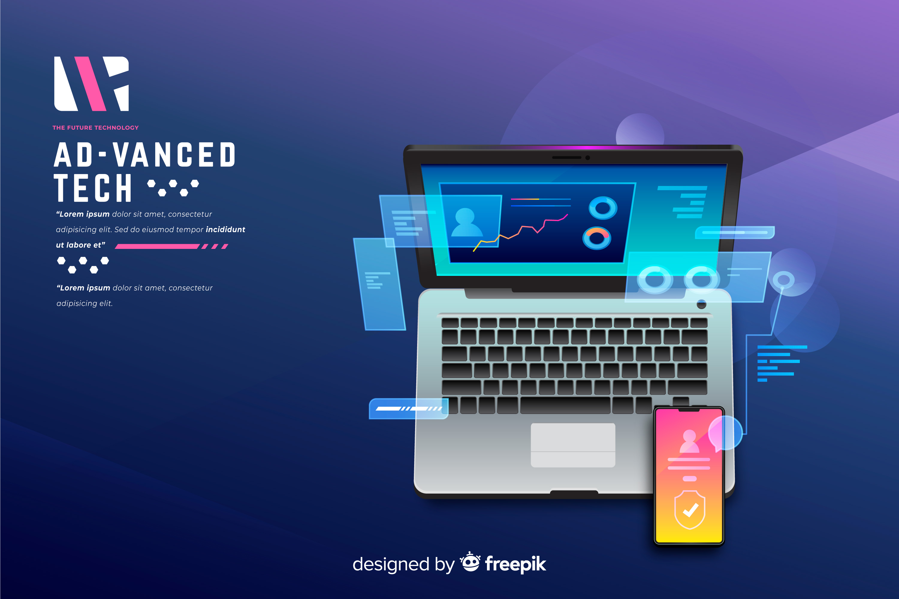
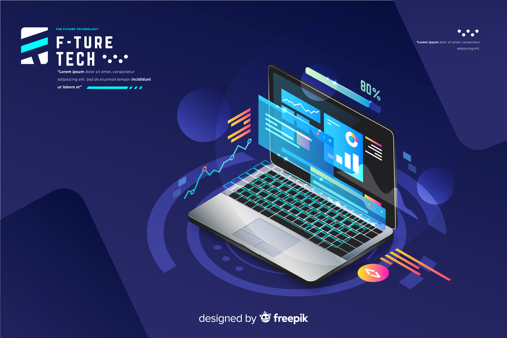
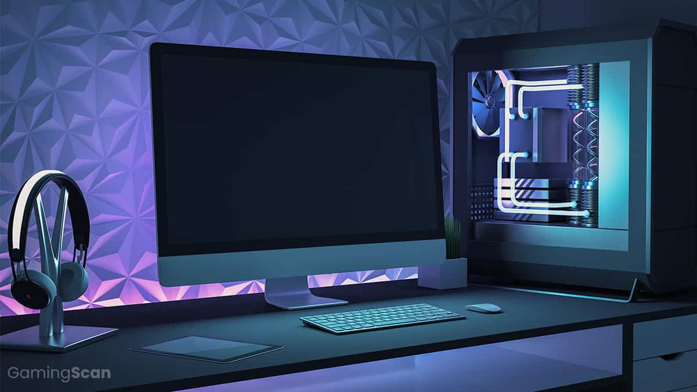
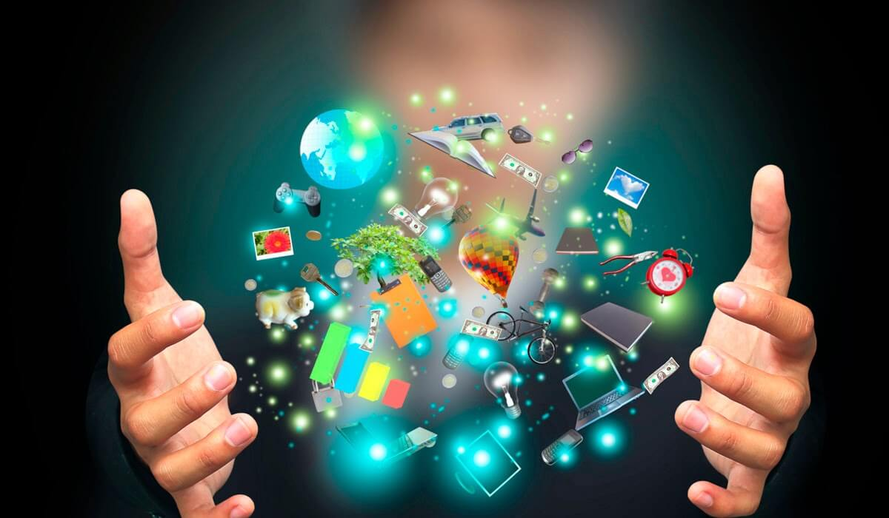

- 
- 
-

La informática es una disciplina que se encarga del estudio y desarrollo de sistemas computacionales, así como del procesamiento, almacenamiento y transmisión de datos a través de dispositivos electrónicos. En la actualidad, la informática está presente en todos los aspectos de nuestra vida cotidiana, desde la gestión de información en empresas hasta el acceso a conocimientos en línea, pasando por la automatización de procesos y la creación de redes que interconectan a millones de personas alrededor del mundo. Esta ciencia no solo se limita a la programación de software y hardware, sino que también abarca áreas como la inteligencia artificial, la ciberseguridad y el análisis de grandes volúmenes de datos, lo que hace que sea una herramienta fundamental en la innovación y el progreso tecnológico. La informática ha transformado la forma en que trabajamos, nos comunicamos, nos educamos y nos entretenemos, y continúa evolucionando rápidamente, abriendo nuevas oportunidades y desafíos en diversos sectores como la medicina, la ingeniería, la economía y el arte. En resumen, la informática es la columna vertebral de la era digital, proporcionando las bases para el desarrollo de soluciones tecnológicas que mejoran la calidad de vida y la eficiencia de las organizaciones.
La tecnología está destinada a transformar nuestras vidas de maneras que apenas comenzamos a imaginar. Con avances como la inteligencia artificial, el Internet de las Cosas (IoT) y la automatización, cada aspecto de nuestra existencia se está viendo mejorado para hacernos la vida más fácil, eficiente y accesible. Por ejemplo, en la medicina, los dispositivos inteligentes permiten diagnósticos más rápidos y tratamientos personalizados, mientras que en la educación, las plataformas en línea brindan oportunidades de aprendizaje a personas de todo el mundo. Además, la tecnología está revolucionando las ciudades, haciendo que sean más inteligentes y sostenibles, reduciendo el consumo de recursos y mejorando la calidad del aire. A medida que la conectividad y la digitalización siguen avanzando, las barreras geográficas se desvanecen y surgen nuevas formas de trabajo, colaboración y creatividad. Sin duda, la tecnología está diseñada para empoderarnos, abrir nuevas posibilidades y enfrentar los desafíos globales, construyendo un futuro más brillante y prometedor para todos.
